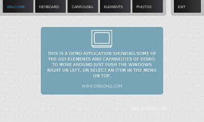

The Archos5 IT a relatively new device running android ontop of Texas Instruments' OMAP3530 processor featuring ARM Cortex-A8.
However Archos also provides a firmware based on Anström which is called Special Developer Edition (SDE). We used this firmware to create a demo image for the Archos 5 that boots into our current version of the Disko demos.
Just follow the Instructions from the Archos website.
Attention: installing the SDE will void the warranty for your Archos device and you will loose the ability to play DRM secured content forever, because installing the SDE will result in overwriting the needed DRM keys in the device!
After you downloaded and installed the SDE image you should see the changes in the boot splash. The disko demo image can be downloaded here. It contains a replacement root filesystems that we created using the OpenEmbedded overlay supplied by Archos.
Connect the Archos 5 device via usb to your PC, then set the Archos 5 device to recovery mode by pressing the minus key while powering up the device. From the menu that is displayed on the screen choose "Repair Disk". This will expose the Archos5 root filesystem like any usb flash device to your PC. Then just overwrite the root filesystem image with the version suppled by us.
Select done in the Archos5 menu and reboot the device. If everything is going well, you should see the demo start screen:
If anything goes wrong, you can repeat these steps as often as you like, and even return to the android image as well.